── Attaching core tidyverse packages ──────────────────────── tidyverse 2.0.0 ──
✔ dplyr 1.1.4 ✔ readr 2.1.5
✔ forcats 1.0.0 ✔ stringr 1.5.1
✔ ggplot2 3.5.1 ✔ tibble 3.2.1
✔ lubridate 1.9.4 ✔ tidyr 1.3.1
✔ purrr 1.0.2
── Conflicts ────────────────────────────────────────── tidyverse_conflicts() ──
✖ dplyr::filter() masks stats::filter()
✖ dplyr::lag() masks stats::lag()
ℹ Use the conflicted package (<http://conflicted.r-lib.org/>) to force all conflicts to become errors10 Spatial Viz
Use this file for practice with the spatial viz in-class activity. Refer to the class website for details.
# What was range in, and typical, energy used each month, as measured by therms? How does this differ by address?
ggplot(energy, aes(x=therms))+
geom_density()Warning: Removed 12 rows containing non-finite outside the scale range
(`stat_density()`).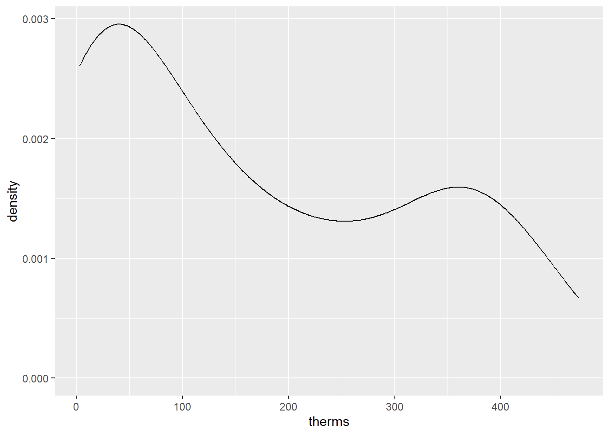
Warning: Removed 12 rows containing non-finite outside the scale range
(`stat_density()`).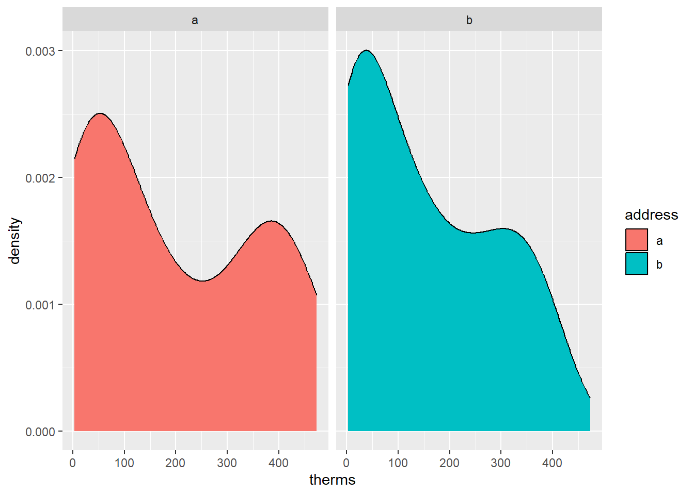
- range: 5 to 475
- big peak around 50 therms, but smaller peak around 350 therms
- not entirely sure what the mean or medial is…probably around 100, but would have to calculate
- Address a and b both have a peak around 50 therms, but it is bigger for address b. Address a’s distribution is more bimodal, with a dip around 250 and a second peak near 375 therms.
# How did energy use (therms) change over time (date) at the two addresses?
ggplot(energy, aes(x=date, y=therms))+
geom_point()Warning: Removed 12 rows containing missing values or values outside the scale range
(`geom_point()`).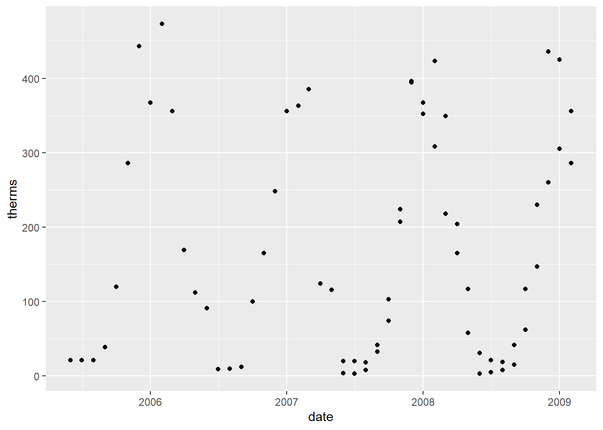
description
The plot shows a sinusoidal pattern within each year, where some months have very low energy usage, but other months have high usage. I think this corresponds to the different seasons–winter has high energy usage (heat), but in the summer it’s lower (also goes between each year; middle dates)
# How did the typical energy use (therms) at the two addresses change before and after they were renovated?
ggplot(energy, aes(x=address, y=therms, fill=renovated))+
geom_boxplot()Warning: Removed 12 rows containing non-finite outside the scale range
(`stat_boxplot()`).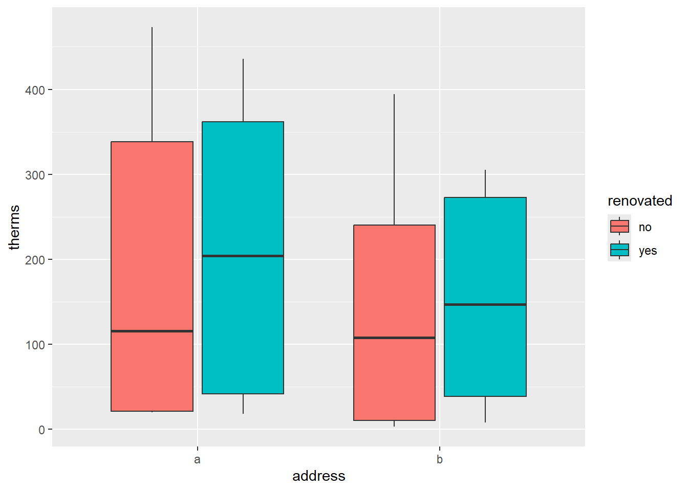
description
The median energy usage in the renovated homes is higher than the non-renovated homes. This is the same for both addresses.
# Think: What confounding, lurking, or omitted variable related to energy usage are we ignoring here? Try to make some plots to prove your point.
ggplot(energy, aes(x=date, y=therms, color=renovated, shape=address))+
geom_point()Warning: Removed 12 rows containing missing values or values outside the scale range
(`geom_point()`).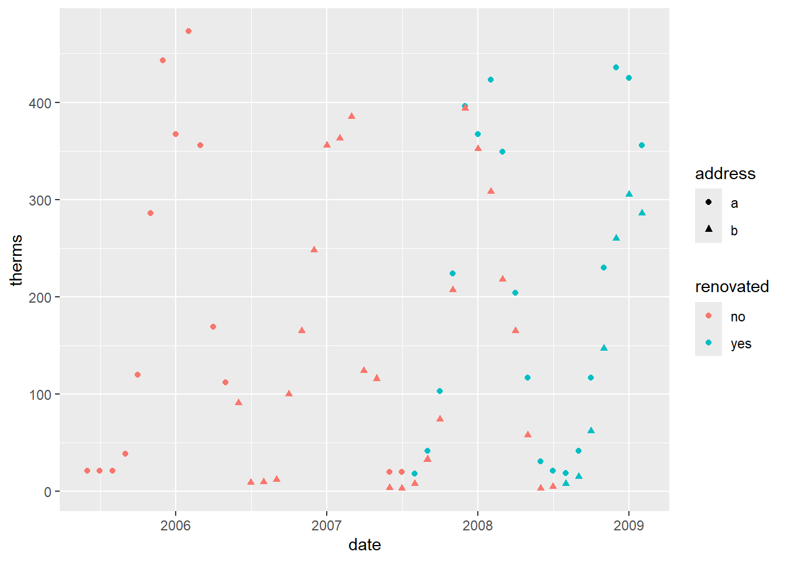
- ok so most of the measurments for the renovated homes was taken in the winter, while the non-renovated homes are from the summer. And b/c we use more energy in the winter, it will cause the energy usage from the renovated homes to appear as being higher
Exercise 5
Let’s summarize the punchlines by filling in the ???. It seemed that: * After renovation… * energy use increased.
BUT this was explained by a confounding or omitted or lurking variable: month (or date) * After renovation… * most of the measurments were taken in winter months * which then leads to higher energy use.
Thus, when controlling for date, renovations led to decreased energy use.
10.1 New Exercises
Exercise 1
fave_places <- read.csv("https://hash-mac.github.io/stat112site-s25/data/our_fave_places.csv")
# Check it out
head(fave_places) latitude longitude
1 59 18
2 45 -93
3 33 -117
4 40 116
5 40 106
6 37 -122# adds markers of the coordinates for each place in the dataset
# longitude and latitude refer to the variables in our data
leaflet(data = fave_places) |>
addTiles() |>
addMarkers(lng = ~longitude, lat = ~latitude)
Attaching package: 'gplots'The following object is masked from 'package:stats':
lowess# We can add colored circles instead of markers at each location
leaflet(data = fave_places) |>
addTiles() |>
addCircles(color = col2hex("red"))# We can change the background
# Mark locations with yellow dots
# And connect the dots, in their order in the dataset, with green lines
# (These green lines don't mean anything here, but would if this were somebody's travel path!)
leaflet(data = fave_places) |>
addProviderTiles("USGS") |>
addCircles(weight = 10, opacity = 1, color = col2hex("yellow")) |>
addPolylines(
lng = ~longitude,
lat = ~latitude,
color = col2hex("green")
)Exercise 2
# Import starbucks location data
starbucks <- read.csv("https://mac-stat.github.io/data/starbucks.csv")
# Don't worry about the syntax
starbucks_mn <- starbucks |>
filter(Country == "US", State.Province == "MN")
leaflet(data=starbucks_mn) |>
addTiles() |>
addMarkers(lng = ~Longitude, lat = ~Latitude)Exercise 3
Warning: Removed 1 row containing missing values or values outside the scale range
(`geom_point()`).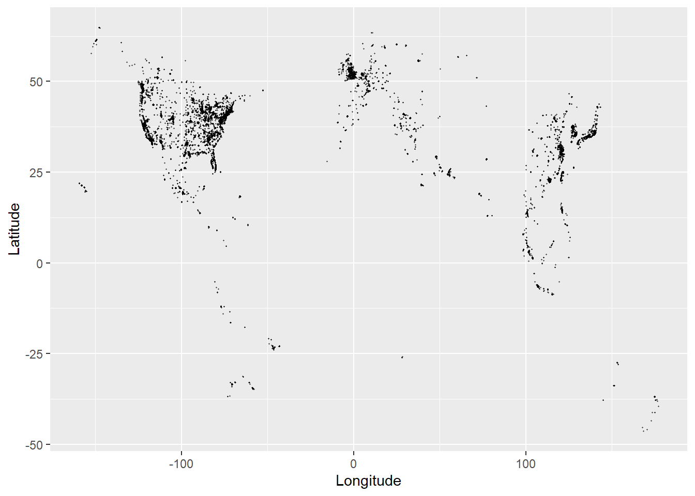
- the plot shows Starbucks locations in the world, but it’s easier to makeout where they are in denser areas because they match the geography of continents
- in areas with fewer Starbucks’, it’s harder to tell where they are in the world
# Load the package
library(rnaturalearth)
# Get info about country boundaries across the world
# in a "sf" or simple feature format
world_boundaries <- ne_countries(returnclass = "sf")
# makes a plot with the borders of the countires
# geom_sf() does something...
ggplot(world_boundaries) +
geom_sf()
Registered S3 method overwritten by 'mosaic':
method from
fortify.SpatialPolygonsDataFrame ggplot2
The 'mosaic' package masks several functions from core packages in order to add
additional features. The original behavior of these functions should not be affected by this.
Attaching package: 'mosaic'The following object is masked from 'package:Matrix':
meanThe following objects are masked from 'package:dplyr':
count, do, tallyThe following object is masked from 'package:purrr':
crossThe following object is masked from 'package:ggplot2':
statThe following objects are masked from 'package:stats':
binom.test, cor, cor.test, cov, fivenum, IQR, median, prop.test,
quantile, sd, t.test, varThe following objects are masked from 'package:base':
max, mean, min, prod, range, sample, sum# Add a point for each Starbucks
# NOTE: The Starbucks info is in our starbucks data, not world_boundaries
# still making a scatterplot with Starbucks locations, using longitude and latitude coordinates as the x and y values, but there is a background map to contextualize the points
ggplot(world_boundaries) +
geom_sf() +
geom_point(
data = starbucks,
aes(x = Longitude, y = Latitude),
alpha = 0.3, size = 0.2, color = "darkgreen"
) +
theme_map()Warning: Removed 1 row containing missing values or values outside the scale range
(`geom_point()`).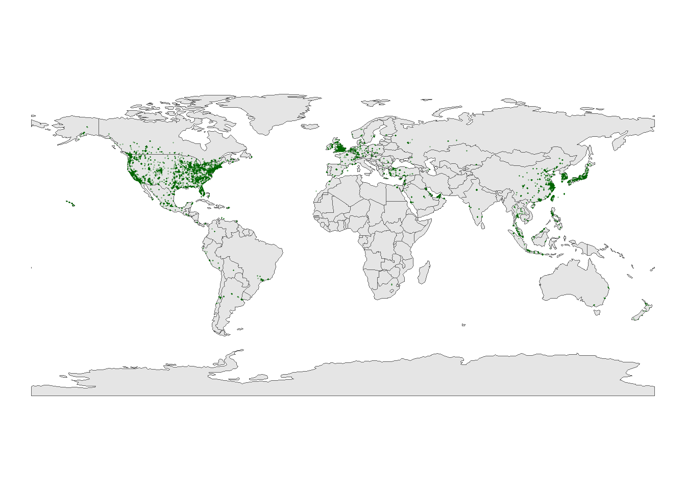
Part C
summary: Starbucks’ are mainly in the more populated parts of the Northern Hemisphere (eg US, UK, China, Japan, South Korea). There are a some locations scattered throughout other countries, but in large cities (eg Sydney, Melbourne in Australia)
Exercise 5


Exercise 6
starbucks_midwest <- starbucks |>
filter(State.Province %in% c("MN", "ND", "SD", "WI"))
# Load packages
library(sf)Linking to GEOS 3.13.0, GDAL 3.10.1, PROJ 9.5.1; sf_use_s2() is TRUE
Attaching package: 'maps'The following object is masked from 'package:purrr':
map# Get the boundaries
midwest_boundaries <- st_as_sf(
maps::map("county",
region = c("minnesota", "wisconsin", "north dakota", "south dakota"),
fill = TRUE, plot = FALSE))
# Check it out
head(midwest_boundaries)Simple feature collection with 6 features and 1 field
Geometry type: MULTIPOLYGON
Dimension: XY
Bounding box: xmin: -96.81268 ymin: 45.05167 xmax: -93.01397 ymax: 48.53526
Geodetic CRS: +proj=longlat +ellps=clrk66 +no_defs +type=crs
ID geom
minnesota,aitkin minnesota,aitkin MULTIPOLYGON (((-93.03689 4...
minnesota,anoka minnesota,anoka MULTIPOLYGON (((-93.51817 4...
minnesota,becker minnesota,becker MULTIPOLYGON (((-95.14537 4...
minnesota,beltrami minnesota,beltrami MULTIPOLYGON (((-95.58655 4...
minnesota,benton minnesota,benton MULTIPOLYGON (((-93.77027 4...
minnesota,big stone minnesota,big stone MULTIPOLYGON (((-96.10794 4...Exercise 7
# What changed in the plot?
# Instead of points representing each datapoint, there are now contour lines representing areas with high density of Starbucks locations
# Outer lines represent the outer boundries of the region and the more contours there are, the greater the density
# What changed in our code?!
# switched from geom_point() to geom_density_2d()
ggplot(cma_boundaries) +
geom_sf() +
geom_density_2d(
data = starbucks_cma,
aes(x = Longitude, y = Latitude),
size = 0.2,
color = "darkgreen"
) +
coord_sf(xlim = c(-179.14, -50), ylim = c(14.54, 83.11)) +
theme_map()Warning: Using `size` aesthetic for lines was deprecated in ggplot2 3.4.0.
ℹ Please use `linewidth` instead.
Part 3: Choropleth Maps
Exercise 8
elections_by_state <- read.csv("https://mac-stat.github.io/data/election_2020_by_state.csv")
elections_by_counties <- read.csv("https://mac-stat.github.io/data/election_2020_county.csv")
# Don't worry about the code!
elections_by_state <- elections_by_state |>
filter(state_abbr != "DC") |>
select(state_name, state_abbr, repub_pct_20) |>
mutate(repub_20_categories =
cut(repub_pct_20,
breaks = seq(30, 70, by = 5),
labels = c("30-34", "35-39", "40-44", "45-49",
"50-54", "55-59", "60-64", "65-70"),
include.lowest = TRUE))
elections_by_counties <- elections_by_counties |>
select(state_name, state_abbr, county_name, county_fips,
repub_pct_20, median_age, median_rent) |>
mutate(repub_20_categories =
cut(repub_pct_20,
breaks = seq(0, 100, by = 10),
labels = c("0-9", "10-19", "20-29", "30-39", "40-49",
"50-59", "60-69", "70-79", "80-89", "90-100"),
include.lowest = TRUE))# Get the latitude and longitude coordinates of state boundaries
states_map <- map_data("state")
# Check it out
head(states_map) long lat group order region subregion
1 -87.46201 30.38968 1 1 alabama <NA>
2 -87.48493 30.37249 1 2 alabama <NA>
3 -87.52503 30.37249 1 3 alabama <NA>
4 -87.53076 30.33239 1 4 alabama <NA>
5 -87.57087 30.32665 1 5 alabama <NA>
6 -87.58806 30.32665 1 6 alabama <NA># elections_by_state gets the republican percentage for each state
# states_map is used to create a map/plot of all the states
ggplot(elections_by_state, aes(map_id = state_name, fill = repub_pct_20)) +
geom_map(map = states_map) +
expand_limits(x = states_map$long, y = states_map$lat) +
theme_map()
# change scale colors
ggplot(elections_by_state, aes(map_id = state_name, fill = repub_pct_20)) +
geom_map(map = states_map, color="white", linewidth = 0.3) +
expand_limits(x = states_map$long, y = states_map$lat) +
theme_map()+
scale_fill_gradientn(name = "% Republican", colors = c("blue", "purple","red"), values = scales::rescale(seq(0,100, by =5)))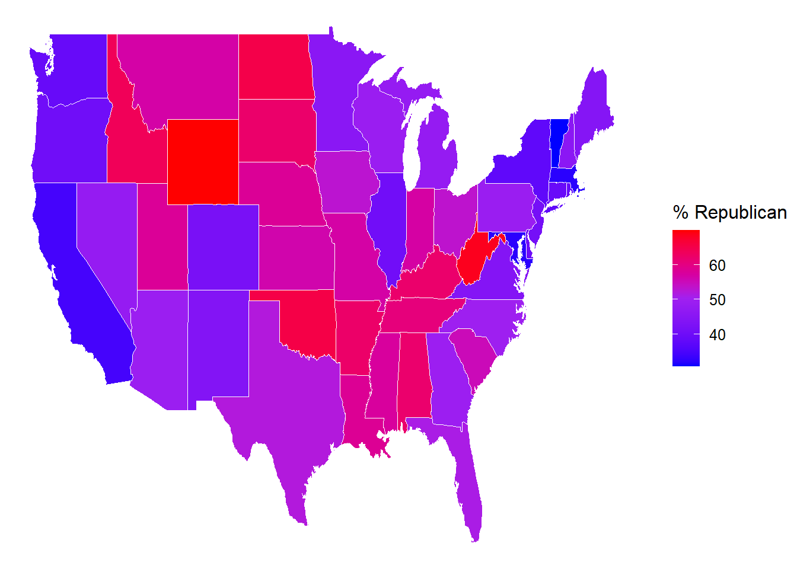
# another way to do scale - more discrete
ggplot(elections_by_state, aes(map_id = state_name, fill = repub_20_categories)) +
geom_map(map = states_map, color = "white") +
expand_limits(x = states_map$long, y = states_map$lat) +
theme_map()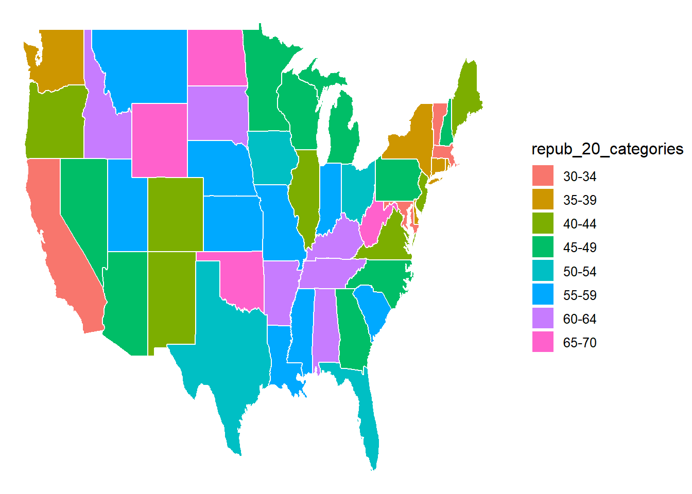
# Load package needed for refining color palette
library(RColorBrewer)
# Now fix the colors
ggplot(elections_by_state, aes(map_id = state_name, fill = repub_20_categories)) +
geom_map(map = states_map, color = "black") +
expand_limits(x = states_map$long, y = states_map$lat) +
theme_map() +
scale_fill_manual(values = rev(brewer.pal(8, "RdBu")), name = "% Republican")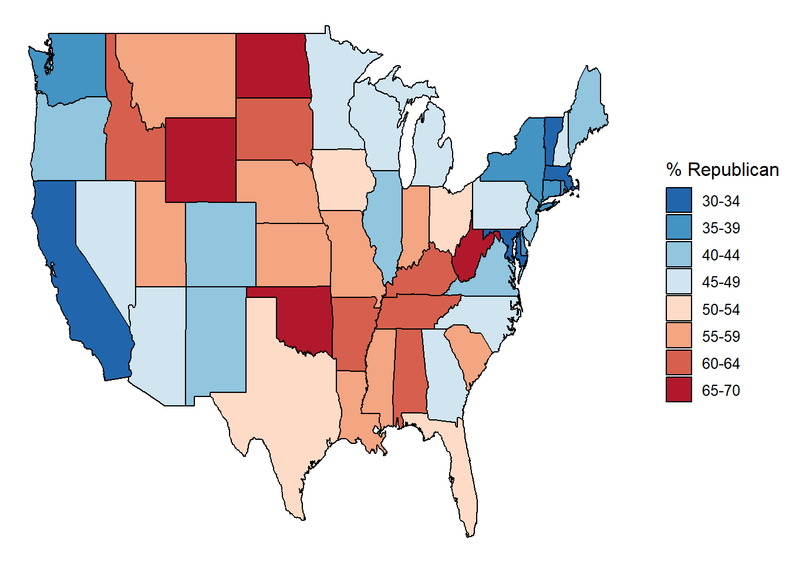
# Get only the starbucks data from the US
starbucks_us <- starbucks |>
filter(Country == "US")
# Map it
ggplot(elections_by_state, aes(map_id = state_name, fill = repub_20_categories)) +
geom_map(map = states_map) +
geom_point(
data = starbucks_us,
aes(x = Longitude, y = Latitude),
size = 0.05,
alpha = 0.2,
inherit.aes = FALSE
) +
expand_limits(x = states_map$long, y = states_map$lat) +
theme_map() +
scale_fill_manual(values = rev(brewer.pal(8, "RdBu")), name = "% Republican")
there are more starbucks’ in urban areas…and urban areas tend to be more democratic than rural areas (lean republican…and would have lower denisty of Starucks)
Exercise 9
# Get the latitude and longitude coordinates of county boundaries
library(socviz)
data(county_map)
# Check it out
head(county_map) long lat order hole piece group id
1 1225889 -1275020 1 FALSE 1 0500000US01001.1 01001
2 1235324 -1274008 2 FALSE 1 0500000US01001.1 01001
3 1244873 -1272331 3 FALSE 1 0500000US01001.1 01001
4 1244129 -1267515 4 FALSE 1 0500000US01001.1 01001
5 1272010 -1262889 5 FALSE 1 0500000US01001.1 01001
6 1276797 -1295514 6 FALSE 1 0500000US01001.1 01001# Add 0's at the beginning of any fips_code that's fewer than 5 numbers long
# Don't worry about the syntax
elections_by_counties <- elections_by_counties |>
mutate(county_fips = as.character(county_fips)) |>
mutate(county_fips =
ifelse(nchar(county_fips) == 4, paste0("0", county_fips), county_fips))
ggplot(elections_by_counties, aes(map_id = county_fips, fill = repub_20_categories)) +
geom_map(map = county_map) +
scale_fill_manual(values = rev(brewer.pal(10, "RdBu")), name = "% Republican") +
expand_limits(x = county_map$long, y = county_map$lat) +
theme_map() +
theme(legend.position = "right") +
coord_equal()
Exercise 10
# county map with median_rent
# create variable for median_rent_categories
elections_by_counties <- elections_by_counties |>
select(state_name, state_abbr, county_name, county_fips,
repub_pct_20, median_age, median_rent) |>
mutate(median_rent_categories =
cut(median_rent,
breaks = seq(0, 1750, by = 250),
labels = c("0-249", "250-499", "500-749", "750-999", "1000-1249",
"1250-1499", "1500-1749"),
include.lowest = TRUE))
# create map
ggplot(elections_by_counties, aes(map_id = county_fips, fill = median_rent_categories))+
geom_map(map = county_map, color="black", linewidth=0.05) +
expand_limits(x = county_map$long, y = county_map$lat) +
theme_map()+
theme(legend.position = "right")+
scale_fill_manual(values = rev(brewer.pal(7, "RdBu")), name = "Median Rent")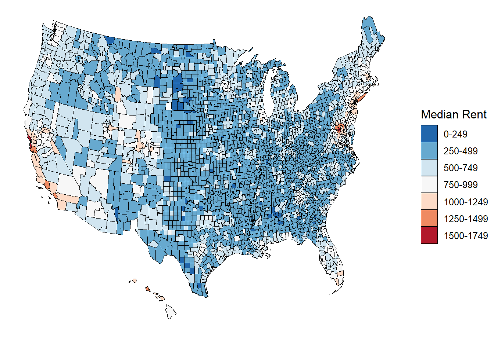
# median age plot!
# create median_age_categories variable
elections_by_counties <- elections_by_counties |>
select(state_name, state_abbr, county_name, county_fips,
repub_pct_20, median_age, median_rent) |>
mutate(median_age_categories =
cut(median_age,
breaks = seq(20, 70, by = 10),
labels = c("20-29", "30-39", "40-49", "50-59", "60-69"),
include.lowest = TRUE))
# create the map
ggplot(elections_by_counties, aes(map_id = county_fips, fill = median_age_categories))+
geom_map(map=county_map, color = "white", linewidth = 0.01)+
expand_limits(x = county_map$long, y = county_map$lat)+
theme_map()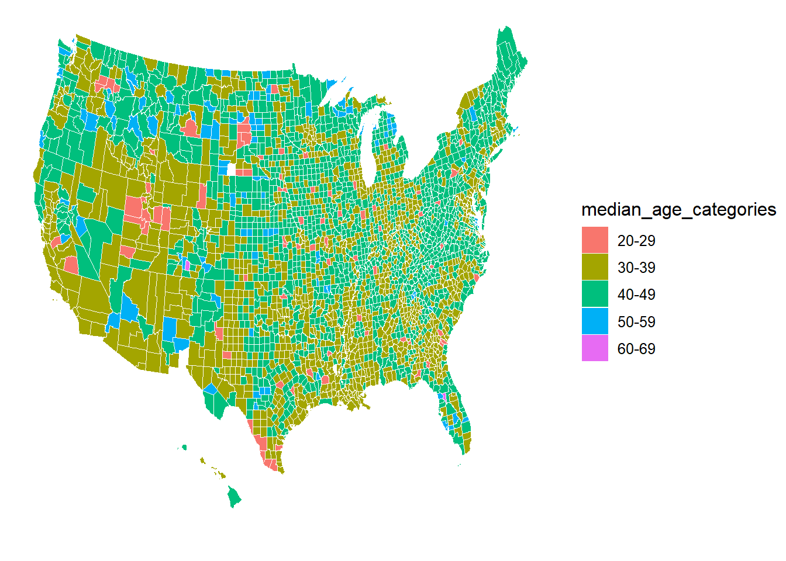
- median age in most counties is between 30 and 50
- Utah has a lot of younger people (20-29) –> is it the high Mormon population with young children?